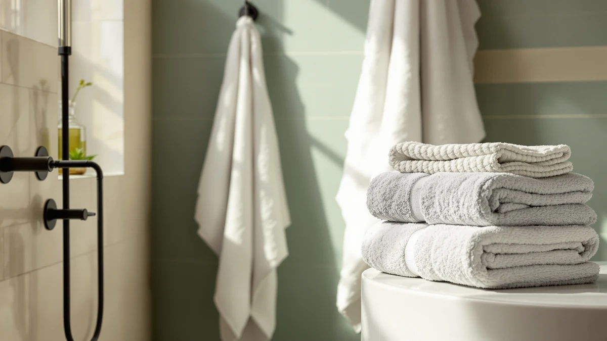

Best Hand Towels for Kids of 2026: 7 Top Picks | Best Bath Towels
Prices and picks verified as of August 2026. Independent, reader-supported reviews.


Quick Answer
For most families, the best hand towels for kids come from the Utopia Towels 8 Piece 100% cotton set at $27.99. It gives you enough soft, machine-washable pieces to keep a dry one in rotation for every child, and cotton only gets gentler on young skin with each wash. If you want towels that dry fast in a steamy kids' bathroom, the microfiber JML or Orighty two-packs are the better answer.
Our pick: Utopia Towels 8 Piece Luxury, $27.99 Check Price on Amazon
Bottom line: our top pick is the Utopia Towels 8 Piece Luxury Towel Set at $30.39. The best budget option is the Orighty Bath Towels Pack of 2 at $13.99.
Things to Know Before You Buy
- Softness matters more for kids than for adults. Young skin reacts to rough texture, so 100% cotton is the safe default for hand towels for kids. Cotton softens with every wash, while microfiber keeps the same flat feel it started with. Lead with cotton unless drying speed is your bigger problem.
- Buy a set, not a single towel. Kids grab the nearest towel and drop it on the floor, so you need backups in rotation. An eight-piece or six-piece cotton set gives every child a dry towel and a spare, which is the real fix for the never-dry, slightly-smelly towel cycle.
- Smaller pieces are easier for small hands. A hand-towel-sized piece or a standard 27-by-54-inch towel is easier for a child to hold and hang than a heavy oversized bath sheet. Match the towel to the kid, not to the showroom photo.
- Microfiber wins in a damp bathroom. If your kids' bathroom has weak ventilation and towels stay wet for a day, a microfiber two-pack dries fast and resists the musty smell. You trade some plushness for that speed.
- White towels are the easiest to keep sanitary. A white cotton set can be bleached back to clean after toothpaste, marker, and the usual kid messes. Colored and dark towels hide stains but cannot be bleached the same way.
Three things make a hand towel work for a kid: soft fabric that does not irritate young skin, enough pieces to keep a dry towel in rotation, and a build that survives constant washing. Luxury barely enters into it. Kids use towels harder than adults. They drag them on the floor, wipe paint and toothpaste on them, and reach for whichever one is closest, dry or not. A towel that works for a child has to absorb the punishment and come out of the laundry looking fine.
For most families, the Utopia Towels 8 Piece Luxury set at $27.99 is the pick. It is honest 100% cotton that softens with each wash, and the eight-piece count means every child has a towel plus a backup, so nobody is forced to dry off with a damp one. If your kids' bathroom stays steamy and towels never seem to dry, the microfiber JML two-pack at $20.00 or the Orighty two-pack at $14.99 dry faster than any cotton here and resist the musty smell that follows a wet towel.
We looked at seven towels for kids across price points, from a $14.99 microfiber two-pack to a $60.00 Egyptian cotton six-piece set. We weighed each on softness against young skin, how many usable pieces you get for the money, drying behavior in a humid bathroom, and how well the fabric holds up after dozens of washes. Below are the picks that earned a spot, the honest trade-offs of each, and the towels we left out.
Why You Should Trust Us
Best Bath Towels covers one narrow category and tries to cover it well. We do not chase every home product. We read manufacturer specs, compare what towels claim against what parents report after months of use, and weigh material, size, piece count, and price the way someone outfitting a kids' bathroom actually would. We earn a commission if you buy through our links, but that does not change which towel we name first. The hand towels for kids that feel softest and survive the laundry are the picks, regardless of price.
For this guide, we treated softness and washability as the deciding traits, because those are what matter most for children. A towel can be large and well-made and still be wrong for a kid if it is rough on the skin or falls apart after a month of hard use. We treated drying speed, size, and value as tiebreakers, not as reasons to override softness and washability.
How We Picked
We started by separating the field by material, because material decides both feel and drying speed. For hand towels for kids, we favored 100% cotton, since it is soft against young skin and gets plusher with washing. We kept two microfiber options in the running because they dry fast and resist mustiness, which matters in a kids' bathroom that rarely dries out, even though their texture stays flat.
We then leaned hard toward sets and multi-packs rather than single towels. Kids go through towels fast and leave them in a heap, so the only reliable way to always have a dry one is to rotate several. That is why most of our picks are four-piece, six-piece, or eight-piece sets. We also ruled out anything priced so high that the cost per usable towel stopped making sense for everyday family use. What survived spans $14.99 to $60.00, in cotton and microfiber, in standard and oversized sizes.
How We Compared
We evaluated each of these hand towels for kids on four things. First, softness: whether the fabric is gentle straight out of the package and whether cotton softens after a few washes. Second, washability: shedding, shrinkage, and whether the towel keeps its texture and color after repeated hot cycles, since kids' towels get washed constantly. Third, drying behavior: how fast the towel dries between uses in a normally ventilated bathroom, which is what keeps it from turning musty. Fourth, value, expressed as cost per usable piece rather than the sticker price of the pack.
Where a towel is 100% cotton, we note that it softens with washing but dries slower than microfiber. Where a towel is microfiber, we note that it dries fastest but keeps its flat texture for life. We did not score anything on a scale or invent lab numbers. We report what the material and construction predict, and where parents consistently confirm or contradict the marketing.
Our Picks

Utopia Towels 8 Piece Luxury
What we like
- Honest 100% cotton that softens with every wash
- Eight pieces, enough to give each kid a towel and a backup
- Stands up to constant hot washing
- Reasonable $27.99 for a full set
Flaws but not dealbreakers
- Cotton dries slower than microfiber in a steamy bathroom
- Needs a wash or two before it reaches full softness
| Material | 100% cotton |
| Size | 8 Pieces Towel Set |
We picked this set as the best all-around choice for hand towels for kids because it gets the basics right and gives you the one thing a family bathroom needs most: enough towels to rotate. It is honest 100% cotton, soft against young skin, and it gets plusher every time it goes through the wash. The eight-piece count is the quiet advantage. With that many pieces, you can dedicate a few to the kids and still keep dry spares on the shelf, which is the real cure for the damp, slightly sour towel that gets used three days running.
Cotton this dependable also takes the beating kids hand out. It survives repeated hot washes without falling apart, and at $27.99 for the full set the cost per towel is low. Two honest caveats. It will never dry as fast as microfiber, so in a small, poorly ventilated bathroom you have to lean on rotation to keep it fresh. And like all cotton, it ships with a finishing residue that blocks absorbency, so wash it a couple of times before you judge how it performs. Do that, keep a few in rotation, and this is the set most families should buy.

White Classic Luxury Bath Towel
What we like
- Crisp white that bleaches back to clean after stains
- Eight-piece 100% cotton set, soft on young skin
- Easy to tell sanitary from grimy at a glance
- Matches almost any bathroom decor
Flaws but not dealbreakers
- White shows every stain until you wash it
- At $39.99 it costs more than our top pick for the same piece count
| Material | 100% cotton |
| Size | 8 Pieces Towel Set |
If you have ever fought a losing battle with stained kids' towels, the case for white is simple: you can bleach it. This White Classic set gives you eight pieces of soft 100% cotton in a clean white that you can sanitize back to fresh after toothpaste smears, washable marker, and whatever else ends up on a child's towel. White also tells you at a glance which towel is clean and which one has been on the floor, which is its own kind of useful in a busy household.
The trade-off is the obvious one. White shows every mark until it goes through the wash, so it looks grubbier between launderings than a colored towel would. It also costs $39.99 for the same eight-piece count as our $27.99 top pick, so you are paying a premium for the color and the bleachability rather than for more towel. If a spotless, sanitizable white set is what keeps you sane, this is the runner-up to buy. If you would rather hide the mess than scrub it out, a darker set makes more sense.

Superior Egyptian Cotton 6-Piece Towel
What we like
- Egyptian cotton with a soft, plush feel for young skin
- Six matching pieces in one set
- Softens further with each wash
- Holds up well to repeated laundering
Flaws but not dealbreakers
- At $60.00 it is the most expensive set here
- Fewer pieces than the cheaper eight-piece sets
| Material | 100% cotton |
| Size | 6 Piece Towel Set |
This is the pick for parents who care more about how a towel feels on a child than about squeezing the most pieces out of a budget. Egyptian cotton is prized for its long fibers, which spin into a softer, plusher yarn, and that softness is gentle against the kind of sensitive young skin that reacts to a rougher towel. The six-piece set is matched across sizes, softens further every time you wash it, and takes the constant laundering a kids' bathroom demands without breaking down.
The honest knock is value. At $60.00 this is the priciest set in the guide, and it gives you six pieces where the $27.99 Utopia set gives you eight. So you are paying for the upgraded cotton, not for more towels to rotate. For a child with particularly sensitive skin, or for a family that wants one nice set rather than a pile of basic ones, the feel justifies the price. For everyone juggling a houseful of kids who treat towels like rags, the cheaper cotton sets are the smarter spend.

Tens Towels Pack of 4
What we like
- Four 100% cotton towels for $35.99, a low cost per piece
- Generous 30x60 size wraps older kids fully
- Cotton softens with washing
- Built-in rotation of four for a busy bathroom
Flaws but not dealbreakers
- At 30x60 these are big and heavy for small children to handle
- Bath-towel sizes only; no smaller hand-towel pieces in the pack
| Material | 100% cotton |
| Size | 30 X 60 Inches |
This is the budget-friendly way to put soft cotton in a kids' bathroom when you want size and a low price per towel. You get four 100% cotton towels for $35.99, which works out to under nine dollars apiece, and the generous 30-by-60-inch cut wraps an older child fully after a bath. Cotton softens with washing the way it should, and four to a pack gives you a built-in rotation so there is always a dry towel waiting.
Be clear about the size. At 30 by 60 inches these are full bath towels, big and heavy for a toddler to lift, hang, or wrap on their own, so they fit best with school-age and older kids who can manage a larger towel. The pack is bath-size only, with no smaller hand-towel pieces, so if you specifically want small towels for little hands, the multi-piece sets above are the better match. For a family that wants plenty of cheap, soft cotton coverage and has kids old enough to handle a big towel, this four-pack delivers a lot for the money.

JML Microfiber Bath Towel 2
What we like
- Microfiber dries faster than any cotton towel here
- Resists the musty smell of a damp towel
- Light and easy for a child to carry
- $20.00 for the two-pack
Flaws but not dealbreakers
- Flat, slick feel that some kids dislike
- Texture never softens the way cotton does
| Material | Microfiber |
| Size | 30 in x 60 in |
If your real problem is towels that never dry, this is the answer for a kids' bathroom. Microfiber dries faster than any cotton towel in this guide because its fibers are extremely fine and hold water on the surface rather than soaking it deep into a thick pile, so a microfiber towel can be dry to the touch in a couple of hours instead of most of a day. That speed is exactly what stops a kid's towel from turning sour between washes, and the light weight makes it easy for a child to carry and hang.
What you give up is feel. Microfiber has a flat, slightly slick texture that some children find squeaky, and unlike cotton it never softens, so what you feel out of the package is what you feel in two years. The 30-by-60-inch size is also a full bath towel rather than a small hand towel, so it suits older kids better than toddlers. At $20.00 for two, buy this when drying speed and odor control matter more to you than plushness, and pair it with the rotation habit so each towel gets time to dry.

Orighty Bath Towels Pack of
What we like
- Cheapest fast-drying option at $14.99 for two
- Light and packable for swim and travel
- Dries quickly so it resists mustiness
- Absorbs well despite its thin profile
Flaws but not dealbreakers
- Microfiber feel is flat and slick, not plush
- Texture never softens with washing
| Material | Microfiber |
| Size | 2 Pack Bath Towels |
This is the budget microfiber pick, and it covers the jobs cotton is bad at. At $14.99 for two it is the cheapest way into fast drying, which makes it a smart spare set for a kids' bathroom and an easy choice for the swim bag, a sleepover, or a trip where a wet cotton towel would sit in a bag and start to smell. Microfiber dries in a couple of hours, packs down small and light, and absorbs more than its thin profile suggests, so it handles a real bath fine.
The trade-off is the same one microfiber always asks of you. The texture is flat and a little slick, some kids do not love how it feels, and it will not soften the way cotton does no matter how many times you wash it. As a primary everyday towel for a child who wants something cozy, cotton is the better call. As a cheap, fast-drying, travel-ready backup that keeps a damp towel from turning your kid's bag into a science experiment, the Orighty two-pack earns its place.

Utopia Towels 4 Pack Premium
What we like
- Four matching 27x54 standard towels in one pack
- 100% cotton that softens with use
- Standard size is easier for kids than oversized sheets
- Simple, dependable build from a trusted brand
Flaws but not dealbreakers
- At $30.99 it costs more than our eight-piece top pick
- Plainer look than the premium sets
| Material | 100% cotton |
| Size | 27"x 54" - 4 Bath Towels |
This is the no-drama way to add four matching cotton towels to a family bathroom. You get four 100% cotton towels at the standard 27-by-54-inch size, which is the size most American bathrooms are built around and, more to the point here, a size a child can actually handle. A standard towel is lighter and less bulky than a 30-by-60-inch sheet, so kids can lift it, hang it, and wrap up without help. Four to a pack gives you the rotation that keeps a damp towel out of the mix.
The honest knock is the price relative to the field. At $30.99 you pay more for four towels than the $27.99 Utopia eight-piece set costs, so on pure piece count it loses to our top pick. The look is plain too, more workhorse than showpiece. But the cotton is genuine and softens the way cotton should, the standard size is the right scale for kids, and four matching towels bought at once beats slowly accumulating a mismatched drawer. Choose it when you specifically want standard-size cotton towels and the eight-piece set is more than you need.
Quick Comparison
| Product | Material | Price | Rating | Best for | Get it |
|---|---|---|---|---|---|
| Utopia Towels 8 Piece Luxury | 100% cotton | $27.99 | 4 | Most families: soft cotton, full set | View on Amazon → |
| White Classic Luxury Bath Towel | 100% cotton | $39.99 | 4 | Parents who want bleachable white towels | View on Amazon → |
| Superior Egyptian Cotton 6-Piece Towel | 100% cotton | $60.00 | 4 | Softest cotton for sensitive young skin | View on Amazon → |
| Tens Towels Pack of 4 | 100% cotton | $35.99 | 4 | Big cotton towels for older kids, cheap per piece | View on Amazon → |
| JML Microfiber Bath Towel 2 | Microfiber | $20.00 | 4 | Fast drying in a steamy kids' bathroom | View on Amazon → |
| Orighty Bath Towels Pack of | Microfiber | $14.99 | 4 | Cheapest fast-drying spare; swim and travel | View on Amazon → |
| Utopia Towels 4 Pack Premium | 100% cotton | $30.99 | 4 | Four standard cotton towels kids can manage | View on Amazon → |
What size towel is best for kids?
For drying small hands and faces, a hand-towel-sized piece is easier for a child to manage than a full bath towel.
Are cotton or microfiber hand towels better for kids?
Cotton is the safer default for kids because it is soft against young skin and gets plusher with every wash.
The Competition
These are the kinds of towels we considered for kids and set aside, with the reason each one lost out.
Frequently Asked Questions
What size towel is best for kids?
Are cotton or microfiber hand towels better for kids?
How do I keep kids' towels from getting musty and smelly?
How many hand towels does a kid's bathroom need?
Are white towels a good idea for kids?
For the best hand towels for kids, start with the Utopia Towels 8 Piece 100% cotton set at $27.99: it is soft, it holds up to constant washing, and it gives every child a towel plus a spare to rotate. Step up to the Egyptian cotton Superior set for sensitive skin, or switch to the microfiber JML or Orighty two-packs if a steamy bathroom keeps your towels from ever drying. Whichever you choose, buy a set rather than a single towel and keep a few in rotation, and you will stop fighting the never-dry, slightly-sour kids' towel.